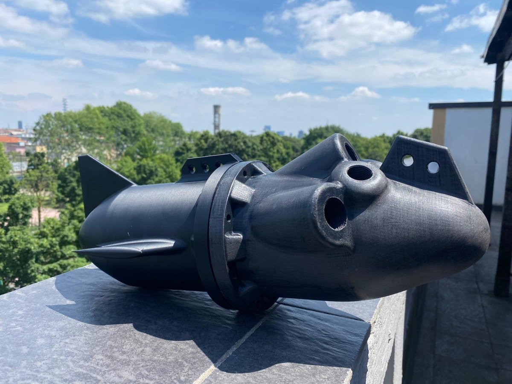
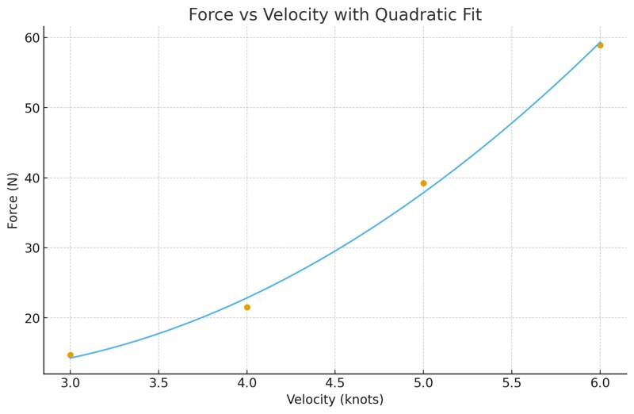
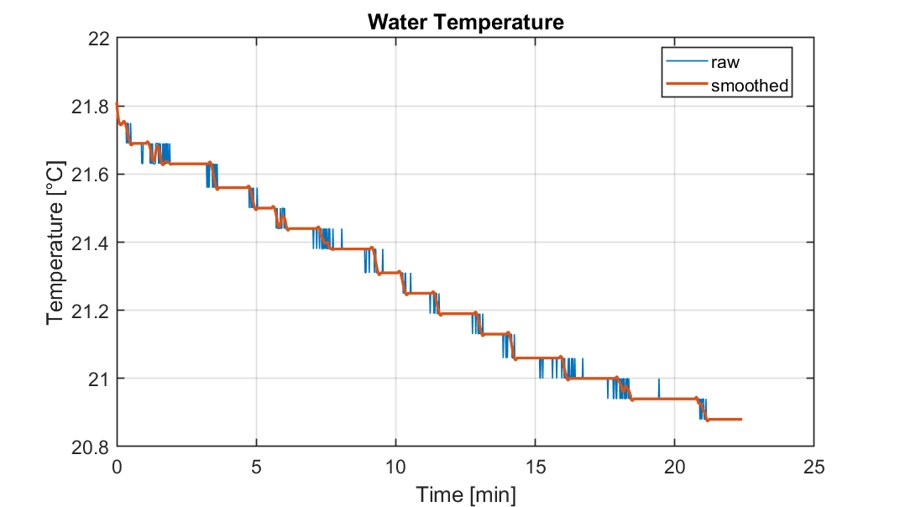
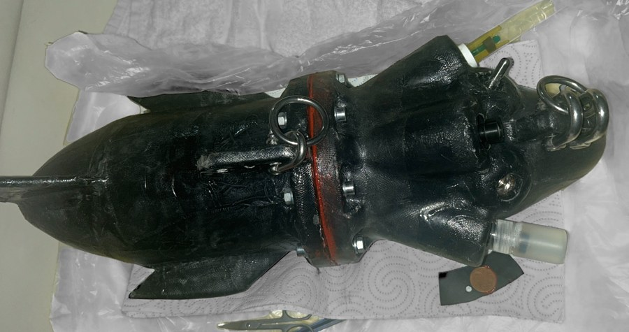

SMARTBOA Marine Sensing

Developed within the Progetto M.A.R.E. initiative, SMARTBOA is a modular, low-cost marine sensing platform for real-time seawater monitoring while under tow from a moving vessel, integrating pH, dissolved oxygen, oxidation-reduction potential (ORP), temperature and pressure sensors synchronized with GPS-based positioning tracked on board. The goal is to turn conventional stationary buoy monitoring into a dynamic, distributed network that any research or recreational vessel can contribute to across the Mediterranean, with initial deployments among the Greek islands.
Modular Design & Sealing
The hydrodynamic body splits into a front section (sensors and docking interfaces), a rear section (stabilizing wings and vertical fin) and an internal electronics case, joined by a central sealing ring and 8 bolts so the unit can be opened to service sensors or retrieve the SD card. The sealing strategy went through a full design iteration: an initial radial O-ring integrated directly into the front body deformed under pressure, so the final design moved to a dedicated, thicker central sealing ring — produced in both 3D-printed polymer and low-cost aluminum — with four redundant radial seals (two front, two rear) arranged to form a labyrinth path against water ingress, sized using Trelleborg's O-ring reference calculator.
Hydrodynamics, Dynamics & Materials

The tow cable was sized from an analytical drag estimate (body modeled as a bullet shape, drag force fit against tow velocity as shown on the left), while the position of the center of gravity and center of buoyancy — with the tow connection placed forward, inspired by fishing-bait behavior — were tuned for stable, predictable underwater attitude while under tow. The main body is FDM 3D-printed in PLA+/PETG, then reinforced with a resin and fiberglass lamination layer to cut water absorption and hydrodynamic drag; the sealing ring's aluminum variant minimizes pressure-induced deformation, and the tow line itself is a low-drag, high-strength commercial tuna fishing line, backed by a secondary safety wire on a custom 3D-printed reel.
Data Acquisition & Field Testing

Since radio waves don't propagate underwater, the Arduino-based acquisition system logs each 1 Hz sample with a real-time-clock timestamp to an SD card, later matched offline against the boat's onboard GPS track to geolocate every reading. The first field deployment, during a Progetto M.A.R.E. route from Corfu to Zakynthos, produced one full ~20-minute test near the Keri caves; the water-temperature trace recorded during that run is shown on the left (dissolved oxygen, ORP and pressure were logged in parallel, while the pH channel failed due to a cable fault).

The test validated the electronics' waterproofing and the end-to-end acquisition-to-map pipeline, while also surfacing the housing's main limitation: FDM printing alone cannot hold the dimensional tolerance a radial O-ring seal needs. Planned next steps include a dual-structure housing (a water-sealed aluminum inner chamber inside a 3D-printed hydrodynamic fairing) and external charging/data ports, so the housing rarely needs to be opened at all.
Tools and Technologies
- Engineering & Manufacturing: CAD (SolidWorks), FDM 3D Printing, Composite Lamination, O-ring/Sealing Design
- Electronics & Data: Arduino IDE, Sensor Integration, GPS Data Fusion
- Key Concepts: Modular waterproof housing design, tow hydrodynamics, field data acquisition